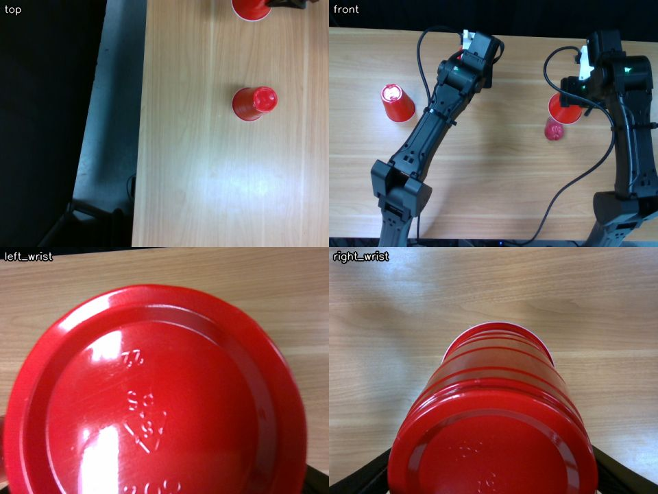

TL;DR
- Robot-use agents are still far too slow for the real world. Benchmarks like RoboDojo don't show it, because their simulators wait for the model before stepping.
- The agent's time goes mostly to per-request overhead, TTFT above all, which it pays on every tool-call round trip. So we cut the number of requests, kept the context short and made the tools faster.
- We then let the robot carry out queued actions while the model plans the next ones, which hides most of the model's time behind motion.
- Finished towel-folding runs went from a median of about 17 minutes to about 6, and on a cup task the robot moved 84% of the time. What remains is latency: the robot acts on what it saw about 5 seconds earlier.
Over the past year, robot-use agents (RUAs) have become a serious alternative to end-to-end robot policies. GPT-6 Astra, driving a robot through code, scored above all 40 public policies on RoboDojo [1]. Uni-robot-agent put open-weight models such as Qwen3.8-Flash-Next on the same benchmark, well ahead of VLA and world-action-model baselines like π0.5 and OpenWAM-α [2]. Anthropic reports 64.9% on RoboDojo Sim for Fable 5.2 [3].
On a real robot, though, these agents are slow. In Fable 5.2's launch video the robot solves a puzzle cube [3], but even with the pauses cut out, the solve takes about an hour.
Benchmarks like RoboDojo don't capture this. Their evaluation loop is synchronous: the simulator blocks until the policy returns its next actions, and episodes are limited by the number of steps, not by time [4]. In this setting a long TTFT or slow decoding costs nothing. On a real robot the clock keeps running while the model thinks, and the robot sits idle until the next command arrives. Rankings can change once the world stops waiting, too: in a game setting, a stronger but slower model wins when the game pauses for it and falls behind when it doesn't [5].
In this post we describe our first attempts at closing this gap on a real two-arm robot. We didn't change the model. Everything we did was in the harness around it: the tools the agent calls, what goes into its context, and how its actions are scheduled.
Setup
Our cell has two YAM arms and four cameras: one overhead, one in front and one on each wrist. The agent is GPT-6 Astra running in Codex at its ultrafast service tier and medium reasoning effort. It is given a task description and a Python robot API, with no scripted skills or demonstrations.


Like PyRUA-Lean [6], we use code as the action interface: the robot is a Python object, and the agent acts by writing short programs against it. We also designed the tools as a white box. The robot API is ordinary Python source that the agent can read, and in practice it starts most tasks by reading it and then writing its own helper functions, such as one that lifts a particular cup. A separate robot server checks every command against a workspace fence and a minimum distance between the arms, which lets the agent run code it wrote itself without anyone reviewing it first.
Where the time goes
Our early towel-folding runs on the real robot took between 13 and 37 minutes. Figure 4 profiles one of the longest. The model accounted for 78% of the wall time and tool calls for nearly all the rest. The robot moved for only a quarter of the run, and much of that motion happened inside blocking calls the agent was waiting on.
Very little of the model's time went to producing output. About two thirds of it passed before each response produced anything at all, in TTFT: upload, queueing, and prefill of a long, image-heavy context. TTFT is a per-request cost, and an agent pays it on every tool-call round trip. A response with fewer than 100 output tokens still had a median TTFT of about two seconds, and TTFT grew as images accumulated in the context. Many of these requests did very little: the agent would spend a whole round trip viewing an image, checking on a program it had started, or asking where an arm had ended up. On average it made several requests per robot action, and the robot was idle through all of them.
This is a different profile from chat, where output tokens usually dominate latency [7]. An agent step emits a short tool call, often a couple of hundred tokens, so the fixed cost per request outweighs decoding. To go faster, we needed the agent to make fewer requests and make each one cheaper, and the requests that remained had to happen while the robot was moving rather than before it.
1. Faster decoding
In short timed requests, Astra's ultrafast tier generated tokens about four times faster than the Fast (priority) tier, with the same time to first output. In our towel runs the median model response fell from 2.9 s to 1.9 s, a third shorter. These were different episodes, so the comparison is rough, but it fits the profile above: decoding was the smaller part of each response, and a faster decoder leaves TTFT where it was.
2. Fewer round trips
Since every request has a fixed cost, we looked for requests that were predictable, meaning the agent almost always made them after a certain kind of action, and folded them into the action itself. The most common pattern was an action followed by several round trips of looking: polling until the program finished, reading each camera image one at a time, and then asking for the robot's state (Figure 5). None of these involves a decision, so we made the action return all of that information directly.
A program that renders images now returns them as part of its tool result, so the model sees them without a separate request. Any program that moves the arms finishes by printing the robot's state: where each arm is, whether the grippers are holding something, and any faults. Error messages say which limit was hit and by how much, so the agent can usually fix the problem on its next try. Checking whether a set of candidate poses is reachable takes one call for the whole list rather than one call per pose.
Instead of polling a running action, the agent now receives a report when the action ends, with the result, the robot's state and a camera view. The agent can also register its own checks, such as a segmentation of the towel, to run after every motion, and their output arrives in the same report.
The same reasoning applies to approval. Early on, the agent often previewed an action with a dry run and looked at the result before running it for real, which costs a full round trip per action. Those previews changed its plan in only about 4 of 99 cases. It works better to let the action run and have the model stop or replace it when the report shows a problem.
3. Keep the context short
A robot agent looks at a lot of images, and as they pile up in the context, TTFT grows on every request. We handled this in two ways. First, we send the four camera views as a single tiled image instead of four separate ones, which keeps TTFT noticeably lower even at the same resolution (Figure 7).
Second, once about 20 images have built up, the harness moves the conversation to a fresh thread in which older images are replaced by short text notes and only the newest few are kept (Figure 6). The first request after a prune can't use the prompt cache, so we prune between turns.
4. Faster tools
Once most of the extra requests were gone, the time spent inside tools became noticeable, at 6 to 10% of the run. Most of it sat between a look and the next action, where nothing else could happen. The largest improvement came from running the agent's code in a persistent Python process. Imports are paid for once, Python starts a call in tens of milliseconds instead of a few hundred, and variables and helper functions survive from one call to the next. We also made camera capture faster.
5. Pipelining: hiding time behind motion
Even with all of the above, the agent still makes a few requests for each action, and as long as each action blocks, the robot waits through every one of them. The last change was to let the model think while the robot moves.
The agent writes each action as a Python function and adds it to a queue. The robot works through the queue in the background while the model plans what comes next, and the model can change the plan at any point: it can replace everything after a given action, or stop the one that is running.
kernel.queue([lift_left, lift_right]) # run in order, in the background
kernel.queue(new_plan, replace_from="lift_right") # replace the queue's tail while the head runs
kernel.action().stop() # stop now; the arms holdThe timing of feedback turned out to matter (Figure 8). The report for one action arrives as the next one starts, so the model reads how the last action went while the robot is already busy, and still has time to revise the action after that. If the model finishes its turn while the robot is still moving, the harness sends it a fresh camera view so that it gets started on the next step instead of sitting idle. And because a queued action starts from wherever the previous one left off, the agent writes actions that check their own preconditions, for instance that a cup is still in the gripper before carrying it anywhere.
Uni-robot-agent [2] uses the same idea. Its tool calls can run in the background, so the model keeps reasoning while the robot executes, and in simulation this cut episode times substantially. Our version differs mainly in how results come back: instead of the agent fetching them, each report is pushed to it as the next action starts, while there is still time to change what comes next.
Results
We first compare real runs. Figure 10 shows every towel-folding run that finished the task or ran for at least a few minutes, grouped by the three versions of the harness we ran on the robot: the original, one with fewer round trips, a shorter context and faster tools but no queue, and the full harness with the queue. Run times vary a lot, because they depend on how the towel starts out and on the choices the agent makes, and many runs were stopped before the end. Alongside time to finish, we therefore show two measures that don't need a finished run: how much of the time the robot was moving, and how much of the model's time overlapped motion.
Cutting round trips raised the robot's moving share from a median of 29% to 52%, because the robot spent less time waiting between actions. It hid none of the model's time, though, since every action still blocked. The queue is what hid it: the median share of model time that overlapped motion went from almost none to about half. Runs that finished took a median of about 6 minutes with the full harness, against 16 to 18 minutes with the earlier versions.
Because real runs vary this much, they can't tell us what each design contributes on its own. For that we took one real run of the cup task, made with the full harness, and replayed it without each design in turn. The replay keeps the same model responses, tool calls and actions in the same order, and adds back the requests each design removes, at the step and tool costs we measured on the robot. Only the last bar in Figure 11 is the real run.
Together, the changes reduce the wall time of this task from 674 s to 211 s, a 3.2× speedup. Before the queue, almost all of the gain comes from cutting the number of model requests. The queue doesn't reduce the model's time at all, but it moves 137 of the 187 seconds of model time into periods when the robot is moving. From the first motion to the end, the robot goes from moving 24% of the time to 84%.
The table below lists the three runs from our demo videos, all made with the full harness. The last column is the median time from the latest observation the model had received (a report or a camera view) to the moment it queued its next action.
| Task (real runs) | Time to finish | Actions | Robot moving* | Model time hidden | Observation → action |
|---|---|---|---|---|---|
| Three cups hide a pear, a ball and nothing; put the pear under the empty cup | 211 s | 14 | 84% | 73% | 5.7 s |
| Spread a partly folded towel and fold it in half | 151 s | 11 | 67% | 47% | 4.7 s |
| The same, from a crumpled towel | 503 s | 32 | 78% | 72% | 6.0 s |
* From the first motion to the end of the task.
Limitations
Hiding the model's time behind motion is not the same as making the agent fast. Even when the queue hides nearly all of it, every action is still based on an observation that is about 5 seconds old by the time the action is queued (Figure 12). The robot moves most of the time, but it reacts like a player in a game with very high ping.
This is also why the queue helps some tasks much more than others. Lifting three cups in turn can be planned from a single look, so several actions wait in the queue and the robot rarely stops. Cloth needs a look after almost every grasp, so the queue runs one deep, and every few actions the robot waits while the model looks and thinks (Figure 13). Tasks that need fine, live correction are the worst case. In our ring-stacking runs, where the agent had to line a ring up over a peg, the robot was moving only 28 to 36% of the time even with the queue, because each small correction depended on seeing the result of the last one.
Closing this gap needs a shorter loop from observation to action. That means lower TTFT and less reasoning on routine steps, but it may also mean splitting the work, so that a faster, smaller model or a reactive controller handles the corrections that can't wait several seconds.
What's next
We treated the model server as a black box throughout this work, and much of the remaining latency comes from it. With a model we serve ourselves, we can work on that side too, for example by starting to process the next camera view while the arm is still moving, before the model is asked about it. We think designing the serving stack and the harness together can take this a good deal further.
References
[1] An Unexpected Robot Policy: Early Evaluations of GPT-6 Astra on RoboDojo. arXiv:2609.24170
[2] Democratizing Robot-Use Agents: A Unified Harness with Open Models (uni-robot-agent). arXiv:2611.01560
[3] Anthropic, Claude Fable and Mythos 5.2. anthropic.com
[4] RoboDojo. arXiv:2607.04434; evaluation loop in github.com/robodojo-benchmark/RoboDojo (src/eval_client/eval_env.py).
[5] The World Won't Wait. arXiv:2610.20665
[6] Fewer Tokens, Better Action: GPT-6 Astra Robot Agents with 14% Higher Success Rate but 65% Fewer Tokens (PyRUA-Lean). arXiv:2610.01939
[7] OpenAI, Latency optimization guide. developers.openai.com
Acknowledgement
To be added.
Contributors
FastRUA Team
Citation
@misc{realtimerua2026,
title = {Getting Robot-Use Agents to Run in Real Time},
author = {{FastRUA Team}},
year = {2026},
month = nov,
howpublished = {Hao AI Lab Blog},
url = {https://haoailab.com/blogs/realtime-rua/}
}